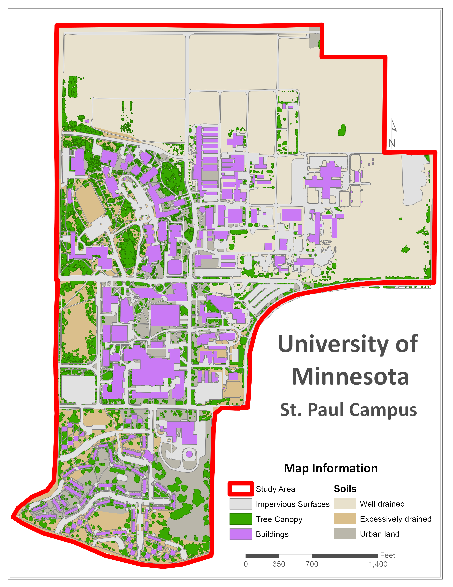

This is a website that was created to display the workflow and results of a watershed analysis of the St. Paul Campus. For more information on any part of the project please click on the appropriate label in the ribbon on the top of the page.

This semester long project utilizes a large variety of skill sets including digitizing, data development, writing topology rules, and creation of a workflow using the model builder tool in ArcMap.
A few exercises were done at the beginning of the semester to aid in the development of the final runoff elimination model. These included one on hydrologic modeling to understand hydrologic processes and included the creation of flowpaths and watersheds. Another exercise was on in LiDAR processing, using LAS tools to create DEM/hillshade and extract tree heights.
The majority of the data used was created by digitizing campus features such as buildings, tree canopy, and impervious surfaces such as sidewalks and parking lots.
Sewer grate locations were provided by University Services, LiDAR was downloaded from MnTOPO and the soils data can be found at the USDA Web Soil Survey
To get a more detailed project description and primer on how to replicate the analysis please visit the class webpage which can be found by clicking "ESPM 5295 - Watershed Analysis" at the top of the page.